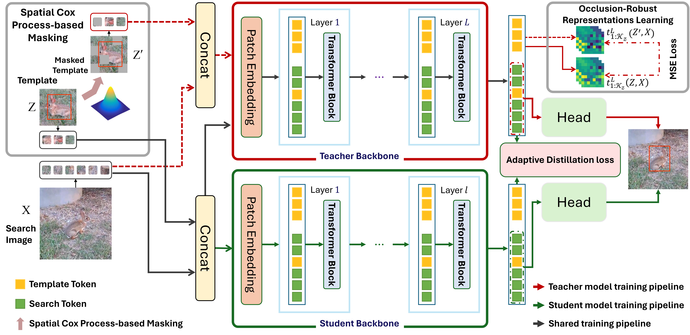
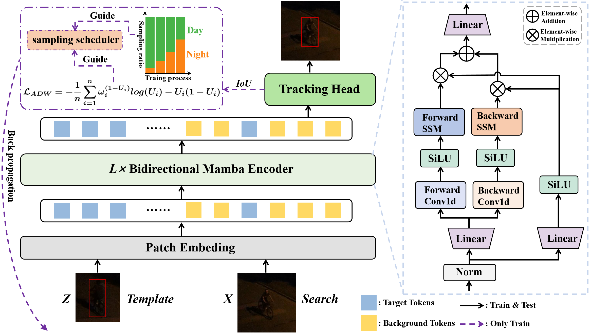

|
You Wu(吴佑) I am currently a research assistant at Westlake University under the supervision of Prof. Chi Zhang. I received my Master’s degree in Computer Technology from Guilin University of Technology in June 2025. My research focuses are visual tracking and text-to-iamge generation. |

|
Selected Publications |
|  |
Learning Occlusion-Robust Vision Transformers for Real-Time UAV Tracking
You Wu, Xucheng Wang, Xiangyang Yang, Mengyuan Liu, Dan Zeng, Hengzhou Ye, Shuiwang Li CVPR, 2025 |
|  |
MambaNUT: Nighttime UAV Tracking via Mamba-based Adaptive Curriculum Learning
You Wu, Xiangyang Yang, Xucheng Wang, Dan Zeng, Hengzhou Ye, Shuiwang Li IROS, 2025 |
Academic Service |
Lead Area Chair, ICCV 2025
Lead Area Chair, CVPR 2025 Area Chair, CVPR 2024 Demo Chair, CVPR 2023 Area Chair, CVPR 2022 Area Chair & Award Committee Member, CVPR 2021 Area Chair, CVPR 2019 Area Chair, CVPR 2018 |
Teaching |
Graduate Student Instructor, CS188 Spring 2011
Graduate Student Instructor, CS188 Fall 2010 Figures, "Artificial Intelligence: A Modern Approach", 3rd Edition |
|
Feel free to steal this website's source code. Do not scrape the HTML from this page itself, as it includes analytics tags that you do not want on your own website — use the github code instead. Also, consider using Leonid Keselman's Jekyll fork of this page. |